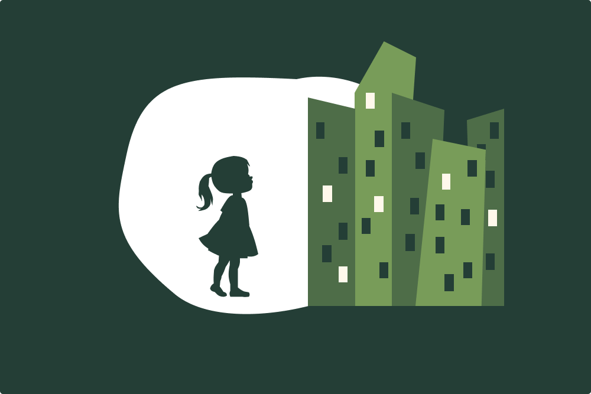

Beyond the Playground: Integrating Children Into Public Spaces

Purpose:
Why are most public spaces designed for adults, while children are often an afterthought? This question guided my fourth-year senior research thesis at the University of Waterloo. I led this independent research project to explore how airports, hospitals, and retail spaces can be made more inclusive for children aged 4-6. The goal was to move beyond traditional spaces built for children as an effort to recognize their potential from a young age.
Goals:
- Reimagine public spaces as intergenerational environments
- Promote independence, confidence, and learning opportunities for young children
- Challenge the notion that play is the only way to include children in design
Approach:
This project combined methods from design research, environmental psychology, and developmental theory. I conducted field observations at five public sites (Pearson Airport, Fort Lauderdale Airport, Grand River Hospital, Credit Valley Hospital, and Conestoga Mall), supported by a comprehensive literature review in child developmental psychology, and environmental design. I also developed an evaluative framework based on three key criteria: discovery, autonomy, and emotional support.
Interventions
Mini Explorers Passport (Airports)
A discovery-based reward system that encourages children to explore airport features and cultural displays independently. This includes interactive stamp stations and visual signage guide participation.

Before

After
Junior Med Explorers Station (Hospitals)
A tactile, kiosk-based learning station that introduces children to basic hospital roles, tools, and procedures through drawings, videos, and sensory elements.

Before

After
Retail Discovery Zones
Hands-on, fabric-based stations where children can learn about textures, colours, and garment-making. Includes outfit building and simple educational touchpoints about materials.

Before

After
Challenges:
One of the main challenges of this project was defining a clear scope. I chose to focus on children aged 4-6 to narrow the design context meaningfully, but this decision required significant upfront research to justify developmentally appropriate design features. Another difficulty was choosing which environments to focus on. While I was ambitious in tackling three different public settings, I recognize that the project may have gained added depth and polish had I concentrated on just one space. Balancing breadth with clarity was an ongoing consideration and challenge.
Impact and Outcome:
I presented this project at the 2025 Knowledge Integration Symposium, where I received valuable feedback from peers, faculty, and community members. This projects contributed to growing conversations around child-friendly public design and offered a framework that bridges design thinking, user-experience, and developmental psychology.